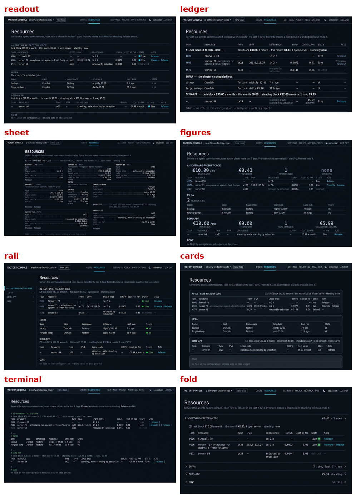
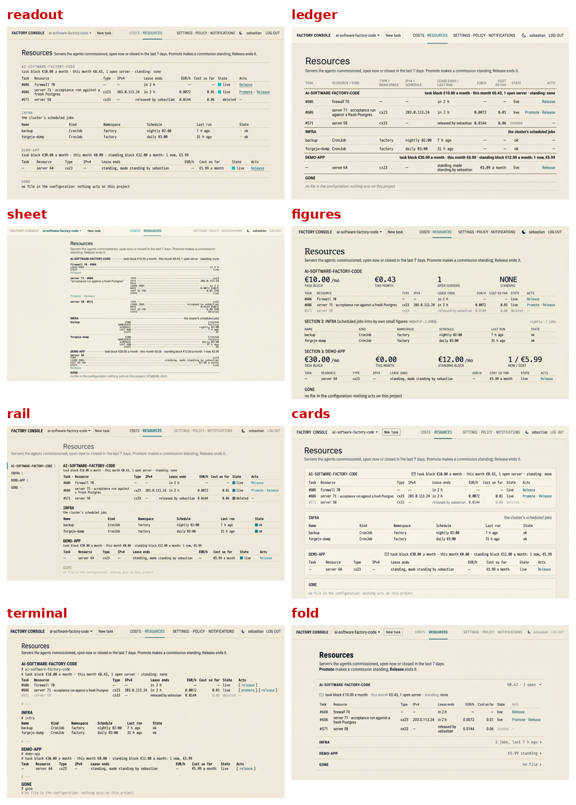
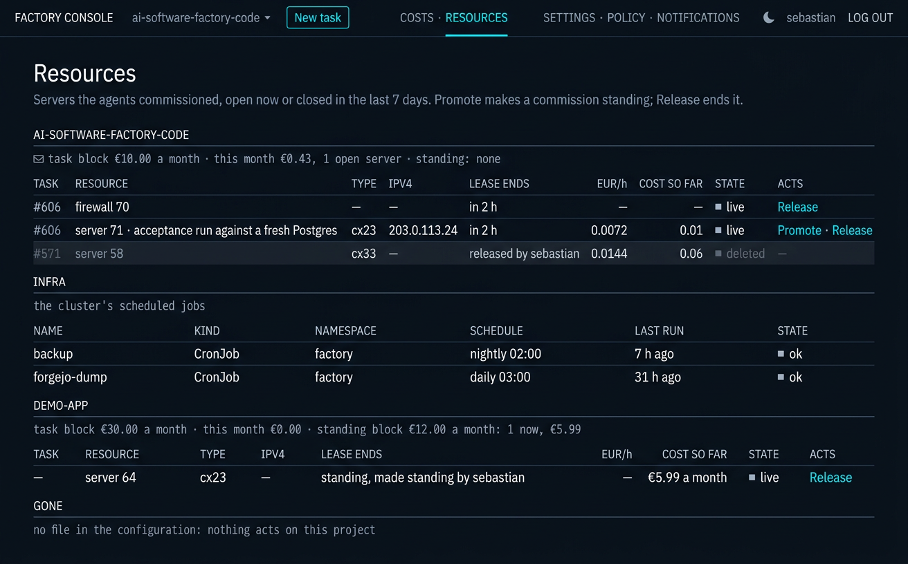
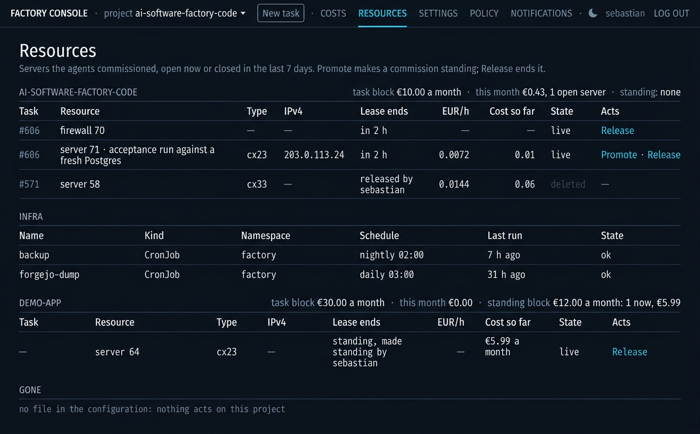
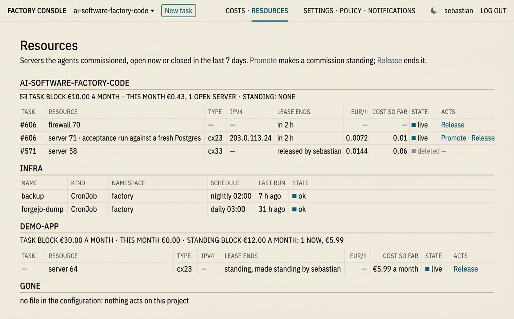
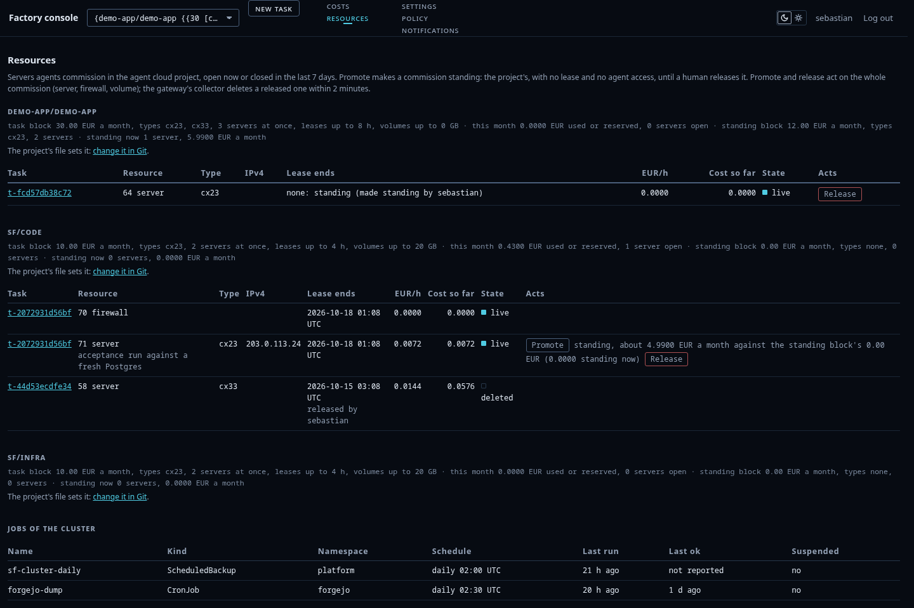
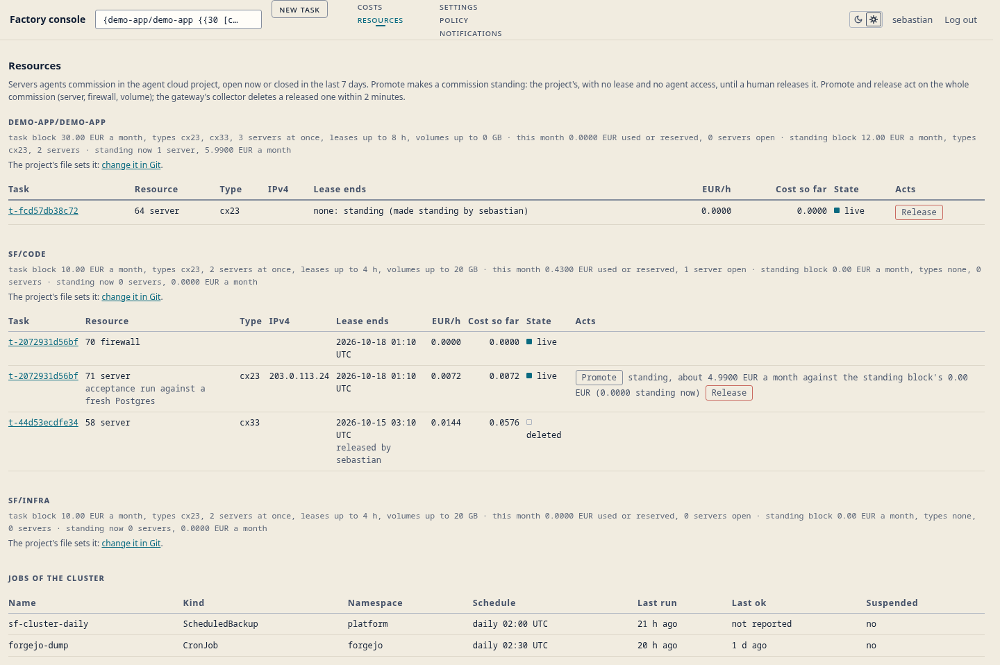
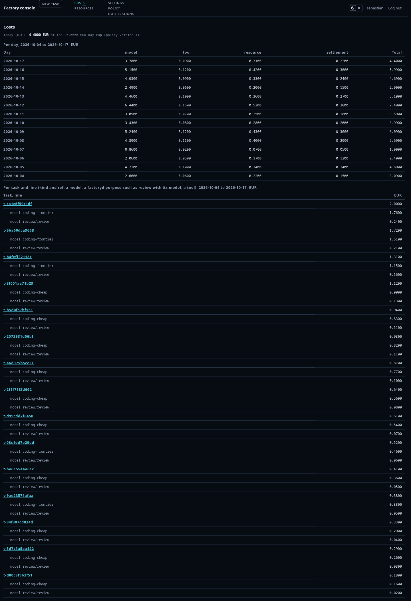

One section, one system: Board and Alerts go (the home link is the board, verdicts live on the escalation card), Projects becomes Settings driven by the bar's project select, and Costs · Resources · Settings · Policy are redesigned under one grammar. The Resources page is the round's probe: the same busy page in eight directions, both themes, judged by two critics and a director's pixel pass.
| # | name | the idea |
|---|---|---|
| 1 | readout | the notification page's grammar, extended: small-caps label, figures line, rows |
| 2 | ledger | one continuous ruled table, small-caps project dividers, strict columns |
| 3 | sheet | dotted leaders, an accounting sheet |
| 4 | figures | the envelope as big numerals |
| 5 | rail | a sticky index rail of projects |
| 6 | cards | the classic control-panel card stack |
| 7 | terminal | monospace everything, prompt lines |
| 8 | fold | 44 px disclosure rows per project |


| run | best | second | worst |
|---|---|---|---|
| gemini | ledger | fold | sheet, figures |
| glm | readout | ledger | cards, figures |
Both flag invented content: hero numbers (figures), a search box (cards), badges (terminal), a nav rail (rail), disclosure mechanics (fold). Full answers: gemini, glm.
Readout and ledger revised in both themes (prompts/genfix.sh);
both fix lists landed. One compare pass (gemini)
on the revised four: readout becomes the system — its grammar
is the notification page's, and Settings' key: value rows and Policy's small
tables live in it naturally; ledger's lateral alignment already exists inside
readout's tables.



Built into the console in one pass: per-project figures lines, right-aligned figure columns, C19 lamps on state and enabled cells, hairline rows on Settings, the policy version as one figures line, policy.yaml and the gateway YAML collapsed. The deck's overrules and why: notes.
Both critics hunted defects on the built pages, dark and light: Costs and Policy CLEAN; every other item traced to a recorded ruling, a misread, or one real fault — the standing row's stronger top rule sat at header weight, so it read as nothing. It now carries the reference's measured weight (2 px of the button-border token), pixel-verified in both themes; the critics' pipelines cannot resolve a 1-vs-2 px line, which the notes record with the evidence. Full answers: gemini dark, light, glm dark, light; the fix checks: gemini, glm.



The build then rebased onto the landed C23 bar when origin/main moved mid-round: round 08's CSS stands, this round's words ride it. The rebase, its verification, and the three lab checks that fail byte-identically on pure origin/main (the notifications session's in-flight expectations) are recorded in the notes.